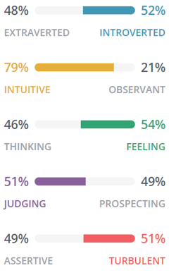

Myers Briggs Type Indicator
Perhaps not surprisingly, a grand desire to make the world a better place is reflected in the Myers-Briggs personality test. According to the results of this test I am an Advocate personalist type, my role is that of the Diplomat with a strategy for Constant Improvement. Below is a graphical representation of my personality profile test.
It is comforting to read that it is in my nature to seek purpose. I do like my work to provide more than a pay check and have at times wondered where this desire comes from. The majority of the report resonates strongly with me despite the Myers-Briggs Type Indicator (MBTI) drawing criticism from within psychology circles.
Strengths
According to MBTI I am creative, insightful, principled, passionate and altruistic. All the strengths required to succeed in my ideal role in IT.
Weaknesses
The MBTI also shows I am sensitive to criticism, reluctant to open up, perfectionistic, avoid the ordinary and prone to burnout. All of these weaknesses I am already aware of and have sought to correct through various self-help programs I have participated in. Being aware of where one needs to improve is important in becoming a better person in life as well as in the workplace.
Team Composition
I enjoy working in teams, especially when it involves helping others and helping them succeed. I need to conscious that I tend to get frustrated if I don’t have a voice, or if there no meaning in my work. I also need to be sensitive to process and red-tape, particularly when I don’t feel it adds value.
I understand that conflict may at times arise when working in a team, however one of my strengths if understanding we are all equals. This helps me understand other peoples motivations and helping them feel like they belong.

Test Two
Learning Preferences
I then discovered my learning style through EducationPlanner. Their testing showed I have a visual style of learning. I can picture what I am learning in my head and learn best using methods that are primarily visible
Test Three
Big 5 Factors
Finally, I completed a Big Five personality trait test which, according to website 123test.com, shows “a concise measure of the five major factors of personality, as well as the six facets that define each factor”.
This report I find the least accurate as, for example, the results indicate an extraverted personality, yet I have always considered myself more introverted. I can often display most characteristics of extraversion but require quiet and solitude to replenish my emotional energy.
Of the three reports, I resonated most with the Myers Briggs Type Indicator. The learning style report from EducationPlanner was the most useful as it listed suggestions to optimise my visual style.
Provided personality type tests are accurate and reliable, I can see great benefits in their use for forming a team. Depending on the nature of the team, the correct personalities can make success easier. For example, a diverse group of people with unique thinking styles is more likely to produce diverse ideas. This is desirable for a team where creativity is a key component. On the other hand, knowing the traits of people within a team can potentially help to avoid an imbalance in team composition. An example may be having a team full of Commanders (Using Myers-Briggs terminology) and Performers may simply create conflict with no productivity.